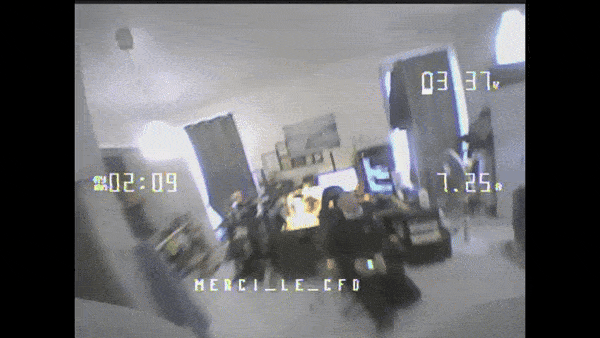
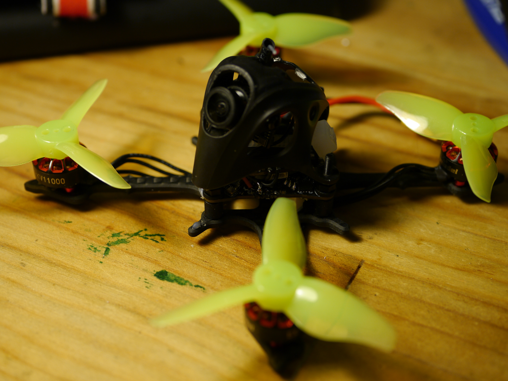
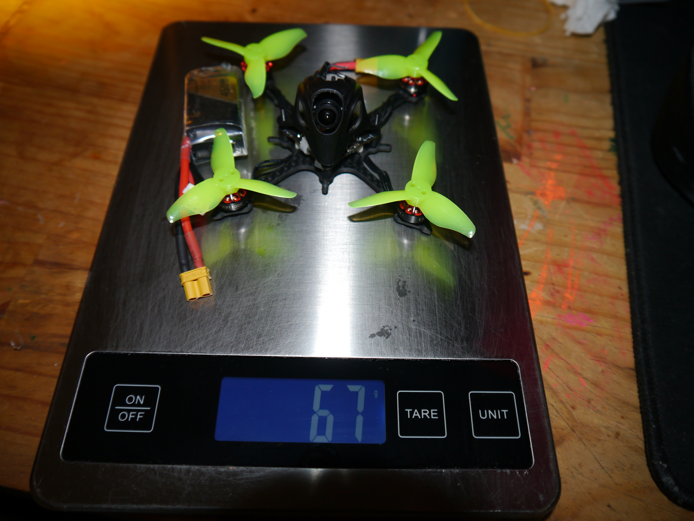
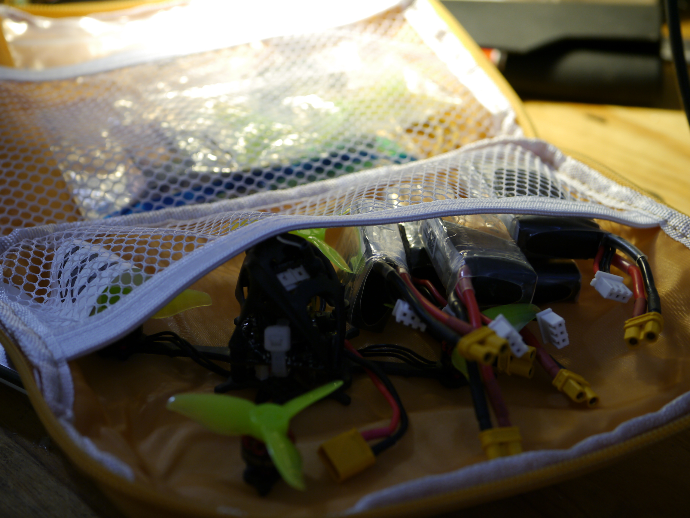

RC & FPV Projects
I have been building and flying FPV aircraft since 2016. While I originally flew 5-inch freestyle quads, evolving European drone regulations led me to shift focus toward sub-250g ultra-lightweight aircraft and endurance fixed wings.
Compact sub-250g gear is incredibly portable: a pair of FatShark goggles, a 3-inch quad or whoop, a RadioMaster Zorro transmitter, and a handful of small batteries fit effortlessly into an everyday backpack.
Daily Drivers & Ground Station
My standard field radio setup centers around a RadioMaster Zorro running EdgeTX/ELRS and a pair of FatShark Dominator V2 HD goggles.

B2 Mini Sub-100g Delta Wings
Full flight endurance experiments writeup: 1-Hour Flight Time Under 100g.
Two experimental micro delta wings built to explore the extremes of wing loading and battery chemistries: one running a high-discharge 2S 450mAh Li-Po, and the other running on a high-capacity single 18650 3500mAh Li-ion cell.
- Airframe: Molded EPP foam wing core
- Motor: DYS 1104 7000KV brushless motor
- ESC: Ultralight 8A brushless ESC (1S) / 15A ESC (2S)
- Receiver: Matek PWM ELRS 2.4GHz
- Propeller: Gemfan Hurricane 3018 bi-blade
- FPV System: All-in-one 25mW VTX + micro CMOS camera
- Battery: Single 18650 3500mAh Li-ion (3.7V) or 2S 450mAh Li-Po
- Servos: Dual 2g micro analog servos
- Hardware: Custom 3D-printed lightweight motor mount


NewBeeDrone (NBD) Hummingbird Tiny Whoop
A sub-35g 1S brushless micro whoop with 31mm ducted propellers. Engineered for indoor flight and tight maneuvers, its ducted frame protects both the quadcopter and household items from damage during high-speed proximity flying.



Noopy - Ultralight 3-Inch Freestyle Quad
Weighing just 64 grams dry (and under 100g with a 2S 450mAh pack), this 3-inch quadcopter balances power-to-weight and compliance with sub-250g civil aviation regulations. The complete travel kit—including 5 battery packs, spare propellers, and tools—weighs only 240g total.
- Frame: Gems by PiratFrames
- Motors: Happymodel EX1103 11000KV
- All-In-One (AIO): Happymodel CrazyF405 ELRS HD 12A (FC + ESC + SPI ELRS)
- Propellers: Gemfan Hurricane 2023
- VTX: BetaFPV M03 25mW 5.8GHz
- Camera: Caddx Ant Nano
- Battery: Tattu 2S 450mAh 75C Li-Po


